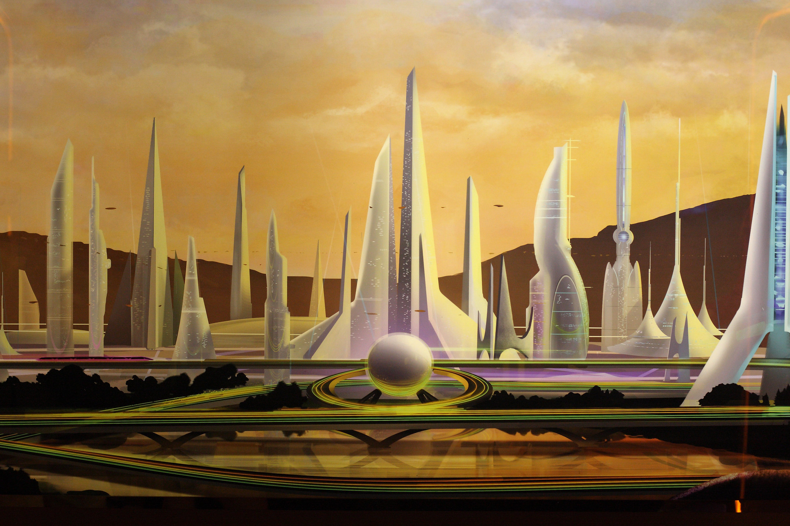

Armando is from the year 2099 in a futuristic and technological world where people have advanced technology of flying cars, trains, hoverboards, new houses, and buildings. However, he got sucked back in time in the year 2022 and was lost. The year 2099 is a peaceful world when humans and animals make a truce after they had a war with each other of which land they can rule. The conflict was animals had been mistreated unfairly by humans and being enslaved. They decided to do a rebellion and plan to get even with the humans.
 "Future City" by Sam Howzit is licensed under CC BY 2.0